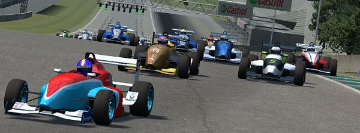
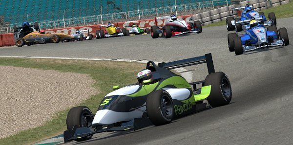
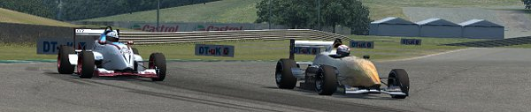
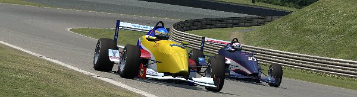
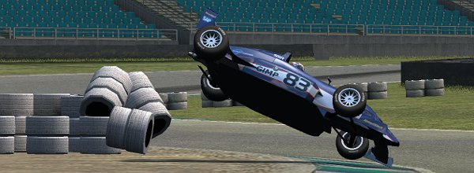
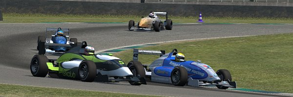
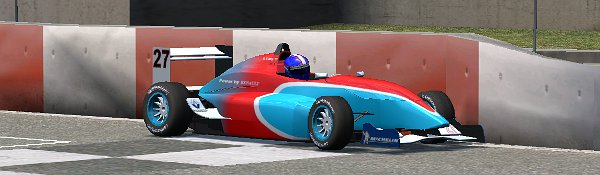

|
FOX series final round was run at Westhill circuit, a quite fast sweeping up-and down
track, which's first half can be run all full throttle in final gear with the FOX cars.
Places for attacking thus rather would have to be found in second half, on approach or in final
turn and turn 7/8 combination.
Series standings' top 4 drivers all placed their cars on first 4 positions on the grid after
Qualifying, with only MaukaZ and Adin having switched positions to standings order. Flame lined
up 5th, APR drivers Fast Jarda and Gepas started from 6th and 8th, with
Y.Laprevotte's teammate Chebbi in between. Bmxtwins again proved to have increased speed
and started from 9th position, in front of EAR's T.Daams and KRT's Masato. Zombie, Chris Koot,
Speedsims drivers Cholerix and DaveO, along with BS Racing drivers C. and K.Sheppard and
all 1LM team made up 2nd half of the grid

Pole sitter and series' leader Alain Lang came perfectly away from starting line, leading the
crowd into first turns, with Y.Laprevotte close behind. Adin soon lost his 3rd position to
MaukaZ in first lap's traffic, just as Chebbi dropped behind Gepas and Bmxtwins had to give
in to T.Daams. Cholerix and Chris Koot both ran wide in T4 on their own doing and were lucky to be
able to crawl back out of the sand, though now way off the field.
Starting at chicane on the same lap, Chebbi, T.Daams and Bmxtwins were struggling for 9th position,
T.Daams trying to pass Chebbi on straight. That fight ended up with Chebbi
getting turned around in T7 in front of Bmxtwins, resulting in a major crash and Chebbi
limping towards pitlane for repair. Some of the backstarters were well benefiting from
that incident when the cars in front had to slow down to avoid getting damaged. DaveO and
DanB had started from last row and now were already running on 12th and 14th position

At the end of lap one, KRT drivers Zombie and Masato went in for regular pitstop, following
their usual strategy, just like C.Sheppard and Cholerix too, the latter one driven by need after noticing
to have forgotten to take up fuel after Qualifying... Chebbi went to pits for repair, while
Bmxtwins, Mustangman and MaukaZ had each to perform Drive-Thru penalties. So again after lap
one the field was split and only cars in first half still close to each others
While Alain Lang was slowly pulling away from all the rest, Y.Laprevotte couldn't shake off
those behind. Adin, back on 3, could follow at same speed, just like Fast Jarda, Gepas and Flame.
T.Daams was 3 secs off from lap one incident, and another 3 secs ahead of those behind him, led by
K.Sheppard, for the same reason. The #07's driver soon was under attack from DaveO and being passed
in final turn... only to have DanB show up behind on the next instant - and again being passed
at the same place at the end of 3rd lap.

Short time earlier Flame and Gepas had been fighting on approaching T1, with Flame trying to pass on
the inside line. That had ended up with both cars colliding on the turn's apex and Gepas flying off
towards railings. He was next in need to limp to pits for repair, but definitely not the last one,
as there was still 15 laps to perform stunts and incidents... Up to that time Mustangman had
been close chasing his bother's car - until he slipped in T7 and
performed a 360° spin, which made him drop back. Some laps later on Bmxtwins was much less lucky when
he hammered his car into the chicane's tire wall... just like Chris and C.Sheppard had already done
before. Unlike the TAG driver, Bmxtwins and C.Sheppard could race on
Lap 6 saw some action on several positions. Flame had finally managed to close in to Fast Jarda,
which caused that one to push harder... and a little too much in T7/8, causing him to run wide and enable
Flame to easily advance to 5th position. Right behind and a little later, DaveO exited final turn
on a line superior to T.Daams' and outran the #982 on the straight. Another short time later K.Sheppard
was under attack from DanB again, after that one had slipped in lap 4, and again the BSR driver had to
give in in final turn. Though not without trying to counterattack on straight and in T1, only without success.

In laps 8 to 10 most drivers were entering pits for regular service; Alain Lang and Y.Laprevotte were
on a different schedule and just ran on for now. Most of the early pit visitors advanced some
positions, and some, like Chebbi and Masato were getting within reach of top ten again. In lap 11
DaveO, with T.Daams still clinging to his car's rear, closed in on Fast Jarda, aiming for 4th
position. The #982 was next one to slip in T7/8, spun, and headed for pits next, just like Fast Jarda
and K.Sheppard too. On exiting pits T.Daams immediatly was under attack from MaukaZ until that one
went into pitlane on the next lap too.
At the end of lap 12 Adin and DaveO were next to enter pits. DaveO had slipped in final turn on approaching
pitlane and only came back to the track several positions down, several seconds behind T.Daams. By
trying to work off his slip ASAP, DaveO went into chicane way to optimistically in lap 13, thoroughly
hit the tire wall and flipped his car. Race over... just like for Gepas too, who never really had
recovered from 3rd lap's incident.

After almost everybody - but the race leader - had been in pits for service, the fight for last podium
position became thrilling again. Alain Lang and Y.Laprevotte were running on safe podium positions, but
3rd place had to be fought out on final laps. Adin was under attack from Flame, but was next to slip in
infamous T7/8 - which had become a popular place to do so. And again unfortunatly the spinning car did
so right in front of the approaching pursuer, who had no way to avoid hitting it and sustain
serious damage. Just like Chebbi in lap 1, Flame had to limp back to pitlane for repair, while
Adin could run on, having recovered just in time in front of Fast Jarda, MaukaZ and DanB. Which all now ran
within the same sec.
In lap 16 both Fast Jarda and MaukaZ managed to pass Adin. When all 4 cars entered final turn that lap,
DanB got a better line than Adin and it looked like that one would drop from 3 to 6 within same lap -
until DanB's exit of that turn led him into Adin's line and caused both cars' tires to contact. While
Adin again was the lucky one and could run on without problems, DanB performed a 360° and dropped back, but
still ran on a safe 6th place, as T.Daams on 7th position was way back.

Some more way back, Masato was aiming for 8th position - and K.Sheppard was the obstacle on the way to get it.
In lap 14 Masato had closed in on the #07 and started attacking... and was successful in lap 16 in final turn.
That place for sure was K.Sheppard's bane this race. Even more way back, after having lost 11th position to
Chebbi, Zombie was in danger to get caught up by Cholerix on final lap, as the #12 came closer fast. K.Sheppard
was soon facing a similar problem about Chebbi
MaukaZ was back on 3rd position when Fast Jarda ran wide in - surprise - T7/8. Now the series' top 3 drivers
were running top 3 positions in the race, with only one lap to go. And with them only being 1 point apart
from each others, this was looking to be the final standings as well. At the same time up front Alain Lang crossed
the finishing line after having run another flawless race, getting not just the race's, but the series' win
as well, there was still action on the back row.

Chebbi gave in to his nerves in T4 and ran wide, handing
over 12th position to Cholerix. K.Sheppard even lost 10th position only on approaching
the finishing line to Chebbi when that one came out of final turn at superior speed after having closed
the gap on the #07 within 2 laps. Y.Laprevotte and MaukaZ finished 2rd and 3rd place in race and standings.
Race's 4th was fast Jarda, Adin came in 5th, DanB 6th, T.Daams 7th, Masato 8th and Flame 9th.
For full race result and final standings, check
here
|